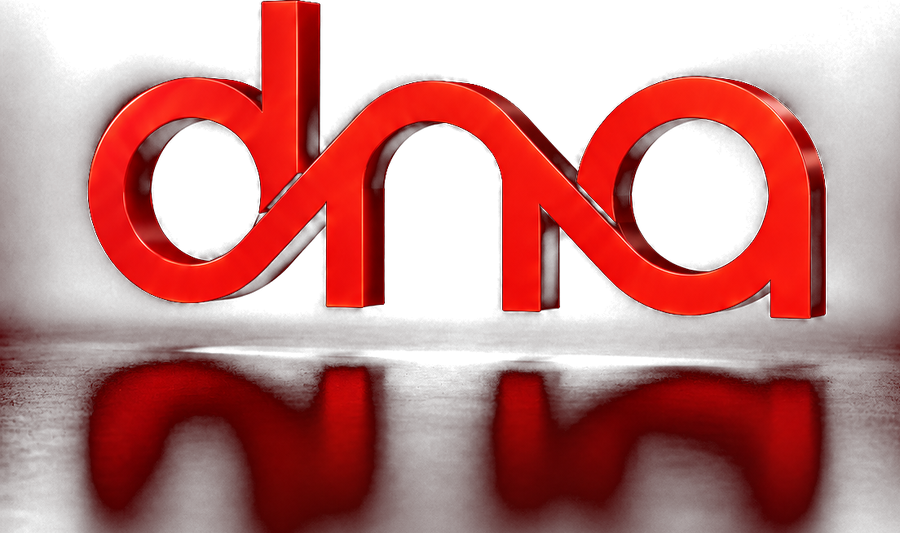
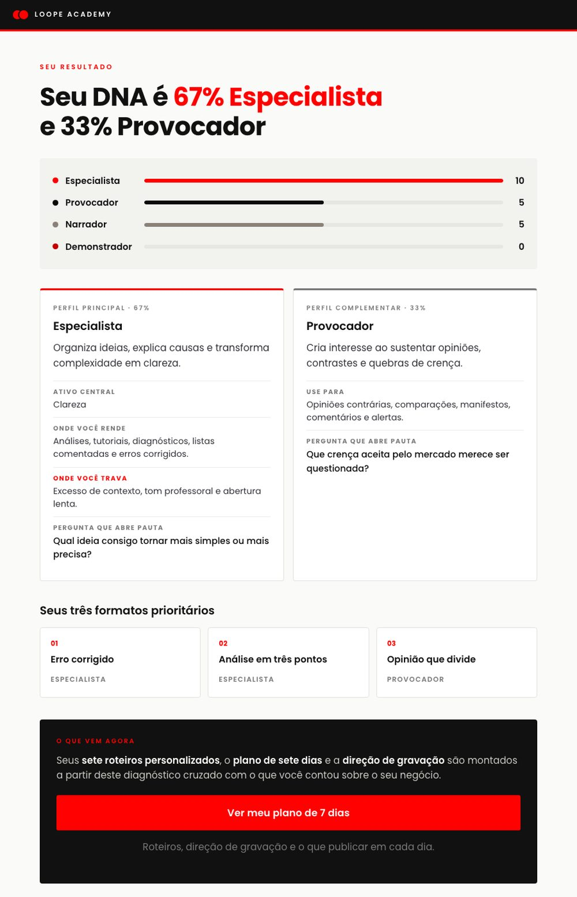

Especialista
Organiza ideias, explica causas e transforma complexidade em clareza.
- Rende em
- Análises, tutoriais, diagnósticos, listas comentadas e erros corrigidos.

O DNA de Conteúdo é um consultor de inteligência artificial que descobre o seu jeito de comunicar em vinte perguntas e entrega os próximos sete conteúdos com roteiro pronto, tempo de cada bloco e direção de gravação.
Diferente de pedir roteiro ao ChatGPT: ele só escreve depois do diagnóstico, usa apenas formatos escritos antes, e é proibido de inventar caso, número ou cliente no seu nome.
Você entra, responde, e sai com a semana definida. Não tem aula para assistir, nem material para estudar antes.
Faz o diagnóstico, monta o plano e as semanas seguintes. Você nunca mais abre o Instagram sem saber o que gravar.
Perfil principal e complementar, com a proporção entre os dois. Você para de tentar ser o tipo de criador que você não é.
Um por dia, com abertura escrita, blocos cronometrados e direção de gravação. Você senta, lê e grava, sem escrever uma linha.
Os que combinam com você e ficaram de fora da semana. Quando cansar de um formato, já sabe qual usar no lugar.
O mesmo diagnóstico em formulário, em quatro minutos. Nos dias corridos, você resolve no clique e vai gravar.
Você explica bem na consulta, na reunião, no atendimento. Na frente da câmera vira outra pessoa. E a conversa dentro da sua cabeça é sempre a mesma:
Nada disso é falta de talento.
É formato incompatível com quem você é.
Você já tentou: veio algo correto e sem graça, que serviria para qualquer um da sua área. Ela escreve sem saber quem é você. O Consultor inverte a ordem, e só escreve depois do diagnóstico.
É inteligência artificial com coleira. O agente conversa, adapta e explica, mas não pode criar formato novo nem preencher um dado seu por conta própria. Essa restrição é o produto. Sem ela, seria mais um gerador de texto genérico.
Vinte perguntas de comportamento revelam o seu perfil principal e o complementar.
Público, oferta, objetivo, rotina e recursos entram na conta. O plano é seu, não do perfil.
Sete roteiros com abertura, marcação de tempo, direção de gravação e chamada.
No fim da semana você empilha o que funcionou trocando uma variável por vez.
Os perfis descrevem tendências, não caixas. O diagnóstico encontra o seu principal e o seu complementar, e é a combinação dos dois que define formato, ritmo, linguagem e o quanto você precisa aparecer.
Organiza ideias, explica causas e transforma complexidade em clareza.
Cria interesse ao sustentar opiniões, contrastes e quebras de crença.
Gera identificação usando experiências, cenas, vulnerabilidade e transformação.
Comunica mostrando processos, objetos, telas, movimentos e resultados.
Um resultado real do diagnóstico: 67% Especialista, 33% Provocador. O principal define o que você repete. O complementar é o que impede o seu conteúdo de ficar previsível.
A entrega principal é o agente, porque ele continua com você depois da primeira semana. Mas se no dia você só quer responder rápido e ir gravar, a versão em página faz o diagnóstico em quatro minutos, por cliques.
O mesmo diagnóstico em conversa. E ele continua com você depois da primeira semana, que é onde a página não vai.

Você responde as vinte perguntas clicando, e o plano da semana aparece pronto na tela. É o caminho mais rápido, e o que a maioria vai escolher.
Não é lista de ideias para virar roteiro depois. Cada dia vem com o formato escolhido para o seu perfil, a abertura escrita, o tempo de cada bloco, como gravar, a métrica e o erro comum daquele formato.
O que está entre colchetes só você preenche: o caso real, o número real. Nem a página nem o Consultor inventam isso no seu nome.
À esquerda, o que volta quando alguém escreve sem saber quem você é. À direita, o que o Consultor entrega depois do diagnóstico.
"Olá pessoal, tudo bem? Hoje vou falar sobre um assunto muito importante que muita gente ignora. Fica até o final que eu vou te contar tudo."
"O erro que eu mais vejo em [SEU PÚBLICO] é [O ERRO QUE VOCÊ MAIS
VÊ]."
0 a 5s · a primeira palavra já é o erro, sem
apresentação
Pode, e vai receber alguma coisa. O que você não recebe é a parte que faz diferença: ele não sabe que você odeia falar para a câmera, não sabe que você tem vinte minutos por semana, e inventa o número e o caso que faltam. Aqui os vinte formatos foram escritos antes, um por um, com o tempo de cada bloco cronometrado. Você paga R$ 47 uma vez para não descobrir isso testando por três meses.
Teste que só te dá um rótulo realmente não muda. Saber que você é Especialista não faz você gravar. Por isso o resultado aqui não termina no perfil: ele continua em sete dias com formato escolhido, abertura escrita e direção de gravação. O perfil é o meio, não a entrega.
É a objeção mais honesta da lista. E é por isso que uma das perguntas é quanto tempo você consegue reservar para gravar, e outra é o que você tem de equipamento. O plano só indica formato que cabe no que você declarou. O primeiro dia costuma ser o mais curto de propósito: o objetivo é você publicar um, não sete.
Os roteiros são estrutura, não texto pronto. Quem preenche o assunto é você, com o vocabulário da sua profissão. E em área regulada, como saúde, direito e finanças, os campos entre colchetes existem justamente para você decidir o que o seu conselho permite afirmar. O sistema nunca escreve uma promessa no seu nome.
Sou a Hayra. Estou há sete anos no mercado digital e já colaborei com o crescimento de mais de cinquenta marcas.
O DNA de Conteúdo nasceu de uma coisa que eu vi se repetir em quase todas elas: o problema quase nunca era falta de assunto ou de vontade. Era formato errado para a pessoa. Quem odeia falar para a câmera tentando gravar reels falado. Quem é ótimo de história tentando fazer tutorial. O método que está aqui dentro é o que eu uso para resolver isso antes de escrever qualquer roteiro.
Menos que uma hora do seu trabalho. Você responde hoje e sai com a semana inteira definida.
Se não fizer sentido, você pede o dinheiro de volta. Faça o diagnóstico, leia o seu plano e grave o primeiro conteúdo. Se você não reconhecer o seu jeito de comunicar no resultado, é só responder o e-mail da compra dentro de sete dias. Sem formulário e sem pergunta.
Vinte perguntas, de quatro a seis minutos, e você sai com a semana inteira definida. Depois é só voltar e pedir a próxima.
Descobrir meu DNA de Conteúdo · R$ 47Acesso imediato e vitalício · 7 dias de garantia · Pagamento único